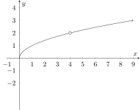

This section describes discontinuities of a function as points of interest (PoI) on a
graph.
Discontinuities of a function
Here is a video!
_
Discontinuities originate in a variety of ways and are a topic of extensive study at
several levels of mathematics. The nature of a given discontinuity can be informative
about what is happening either within the model (eg the model is failing to properly
represent reality at a specific point), or within the context of the model (some
naturally occurring phenomena that the model is somehow ’capturing’ and
representing as a discontinuity).
For example; discontinuities occur in models of the formation of black holes where
the singularity is formed because the density of matter at the singularity is going to
infinity. Discontinuities also appear in the basics of quantum mechanics because of
how the collapse of probability fields work at a quantum level, and even (simplified)
models of objects traveling through the air and colliding with surfaces have
discontinuities!
There are three types of discontinuities:
Holes:
Holes are when a function seems to be nice and continuous, but
is lacking a single point somewhere in the domain causing a small
“hole” in the graph. This is typically represented by an unfilled circle
around the missing point. Below is an example of a hole discontinuity at
:

Asymptotic (Infinite):
Asymptotic (sometimes called ‘infinite’) discontinuities are
when the function bends up or down and approaches a vertical asymptote as it
gets close to the point of discontinuity. This typically demonstrates that
something very strange is happening, since reality rarely tries to push
something to ‘infinity’; so typically an infinite discontinuity is a sign that your
model is either capturing a truly spectacular moment (like the formation of a
singularity in a black hole), or you are trying to do something you really
shouldn’t be trying to do with that model, like when stock market
algorithms cause chaotic feedback and create unstable markets. (This is
one of the reasons some experts think that the so-called ‘flash-crash
of May 6th’ occurred, in which the stock market dropped over 9%
(about 1 trillion dollars in value), only to spontaneously pop back up 36
minutes later.) Below is an example of a asymptotic (aka infinite)
discontinuity:
Jump:
Jump discontinuities occur when the function suddenly ‘jumps’ from one
value to another without covering the space between. This typically happens
because the model is either not inherently continuous (eg the model is rounding
to the nearest whole number, so it will skip from one whole number to the
next without hitting any numbers between), or some sort of important
threshold in the model’s context is being hit, such as entering a new
tax bracket when calculating taxes. Below is an example of a jump
discontinuity:
1 : What is the importance of discontinuities?
Discontinuities represent the
places where your function (and thus your model) is behaving in a weird way;
which suggests further study may be worthwhile.Discontinuities represent
where your model is broken, and thus you should create a new/improved
model to remove them.Discontinuities are important in other areas of
math, so we should learn them now.Discontinuities aren’t ever useful in
the real world, so they don’t have importance outside of the classroom.